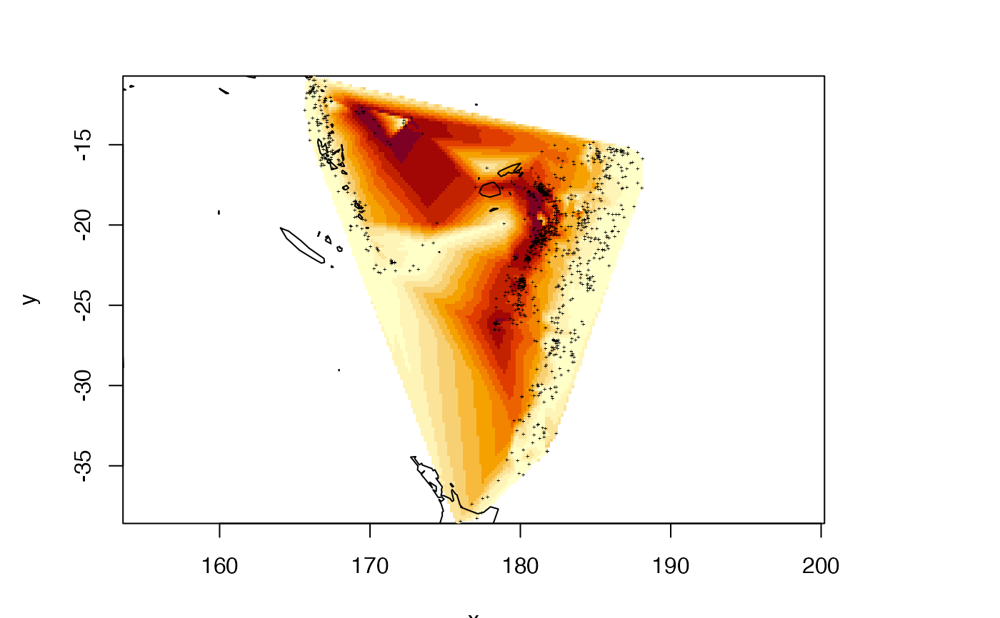
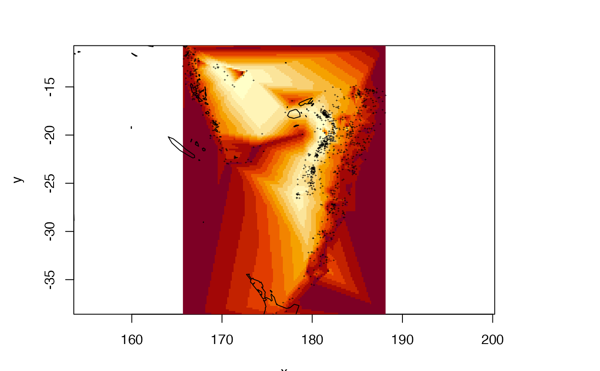

Create a raster by interpolating across triangles
mesh_raster(x, grid = NULL, n = 128) # S3 method for mesh3d mesh_raster(x, grid = NULL, n = 128) # S3 method for matrix mesh_raster(x, grid = NULL, n = 128) # S3 method for data.frame mesh_raster(x, grid = NULL, n = 128)
Arguments
| x | matrix of points, or a mesh3d |
|---|---|
| grid | raster to populate |
| n | grid size of raster if 'grid' not supplied |
Value
Raster
Details
At the moment, mesh_raster is identical to tri_fun for the matrix x-y-z case, but adds capability for a mesh3d object (of triangles). Barycentric interpolation is used to efficiently obtain a within-triangle estimate of a field of values
Examples
data("humface", package = "Rvcg") x <- humface grid <- mesh_raster(x, n = 256) raster::plot(grid, col = grey.colors(21), breaks = quantile(grid, seq(0, 1, length = 22), na.rm = TRUE))#> Error in dyn.load(dynlib <- getDynlib(dir)) : #> unable to load shared object '/Users/runner/work/_temp/Library/rgl/libs/rgl.so': #> dlopen(/Users/runner/work/_temp/Library/rgl/libs/rgl.so, 6): Library not loaded: /opt/X11/lib/libGLU.1.dylib #> Referenced from: /Users/runner/work/_temp/Library/rgl/libs/rgl.so #> Reason: image not found#> Warning: Loading rgl's DLL failed. #> This build of rgl depends on XQuartz, which failed to load. #> See the discussion in https://stackoverflow.com/a/66127391/2554330#> Warning: Trying without OpenGL...#> Error: .onLoad failed in loadNamespace() for 'rgl', details: #> call: rgl.init(initValue, onlyNULL) #> error: OpenGL is not available in this build## interpolate from raw points xyz <- quakes[c("long", "lat", "depth")] xyz$depth <- -xyz$depth gx <- mesh_raster(xyz) rat <- 1/cos(mean(xyz[["lat"]]) * pi/180) raster::image(gx, asp = rat, col = hcl.colors(12, "YlOrRd"))## add some dummy points (we aren't modelling the world) xex <- cbind(expand.grid(long = range(xyz$long), lat = range(xyz$lat)), depth = 0) g2 <- mesh_raster(rbind(xex, xyz)) raster::image(g2, asp = rat)#> #> #> #>#> Error in dyn.load(dynlib <- getDynlib(dir)) : #> unable to load shared object '/Users/runner/work/_temp/Library/rgl/libs/rgl.so': #> dlopen(/Users/runner/work/_temp/Library/rgl/libs/rgl.so, 6): Library not loaded: /opt/X11/lib/libGLU.1.dylib #> Referenced from: /Users/runner/work/_temp/Library/rgl/libs/rgl.so #> Reason: image not found#> Warning: Loading rgl's DLL failed. #> This build of rgl depends on XQuartz, which failed to load. #> See the discussion in https://stackoverflow.com/a/66127391/2554330#> Warning: Trying without OpenGL...#> Error: .onLoad failed in loadNamespace() for 'rgl', details: #> call: rgl.init(initValue, onlyNULL) #> error: OpenGL is not available in this build#> #> #> #>#> Error in dyn.load(dynlib <- getDynlib(dir)) : #> unable to load shared object '/Users/runner/work/_temp/Library/rgl/libs/rgl.so': #> dlopen(/Users/runner/work/_temp/Library/rgl/libs/rgl.so, 6): Library not loaded: /opt/X11/lib/libGLU.1.dylib #> Referenced from: /Users/runner/work/_temp/Library/rgl/libs/rgl.so #> Reason: image not found#> Warning: Loading rgl's DLL failed. #> This build of rgl depends on XQuartz, which failed to load. #> See the discussion in https://stackoverflow.com/a/66127391/2554330#> Warning: Trying without OpenGL...#> Error: .onLoad failed in loadNamespace() for 'rgl', details: #> call: rgl.init(initValue, onlyNULL) #> error: OpenGL is not available in this build#> #> #> #>#> Error in dyn.load(dynlib <- getDynlib(dir)) : #> unable to load shared object '/Users/runner/work/_temp/Library/rgl/libs/rgl.so': #> dlopen(/Users/runner/work/_temp/Library/rgl/libs/rgl.so, 6): Library not loaded: /opt/X11/lib/libGLU.1.dylib #> Referenced from: /Users/runner/work/_temp/Library/rgl/libs/rgl.so #> Reason: image not found#> Warning: Loading rgl's DLL failed. #> This build of rgl depends on XQuartz, which failed to load. #> See the discussion in https://stackoverflow.com/a/66127391/2554330#> Warning: Trying without OpenGL...#> Error: .onLoad failed in loadNamespace() for 'rgl', details: #> call: rgl.init(initValue, onlyNULL) #> error: OpenGL is not available in this build